Cumplelolero · hoy, 1 oct de 2009
NASUS17 AÑOS
El Curador de las Arenas
Top · Shurima · hermano de Renekton
El que más puntos tiene del mundo
KAISER1V9
maestría nivel 9
12 338 546
puntos de maestría
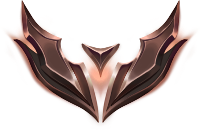
BRONCE 3
Su historial completo
Hierro 4
S2024 S3
Hierro 4
S2024 S2
Hierro 4
S2024 S1
Hierro 2
S2023 S2
Hoy
Bronce 3
lo más alto de su vida
434 — 465 · 48 %
ganadas · perdidas esta temporada
Wachen el detalle
96 %
en top
94 %
con tanques
Sus otros dos campeones
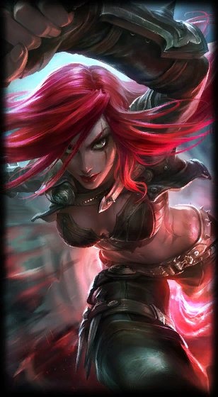
Katarina
la cumpleañera de hace dos semanas
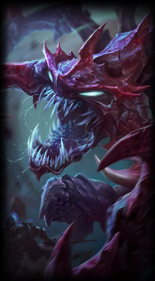
Cho'Gath
el tanque favorito de ayer
Jugamos lo mismo.
Nomás que él trae doce millones.
Debería jugar
dormido y ganar
dormido y ganar
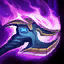
Golpe Absorbente
parche 26.16 · stacks por muerte
Normal
3 → 4
subió
Cosas grandes
12 → 10
bajó
Cambalache, no regalo
Darlo todo y que te lo paguen mal

No era guerrero.
Era bibliotecario.
El conservador de la gran biblioteca de Shurima
No podía ni subir los escalones
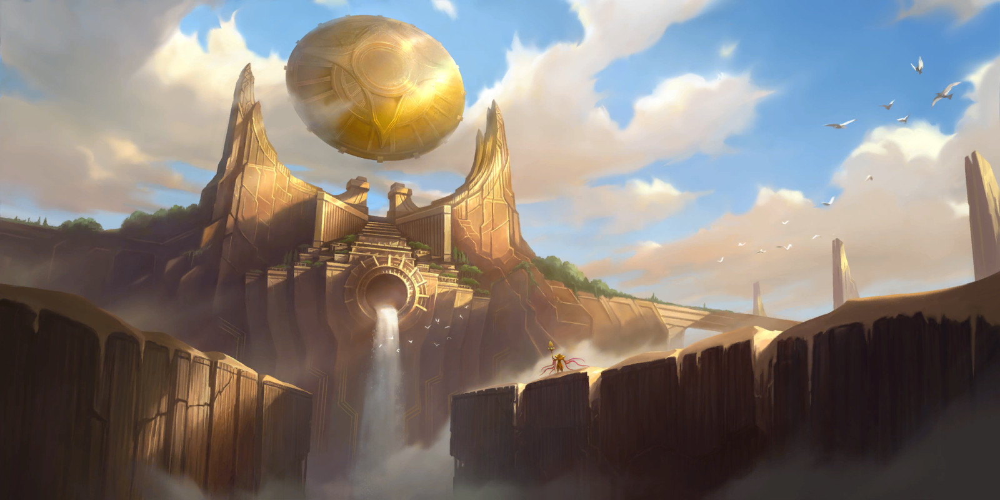
Renekton lo cargó
en brazos
Sabiendo que esa energía lo iba a matar.
Y lo hizo de todas formas.
Y no se murió
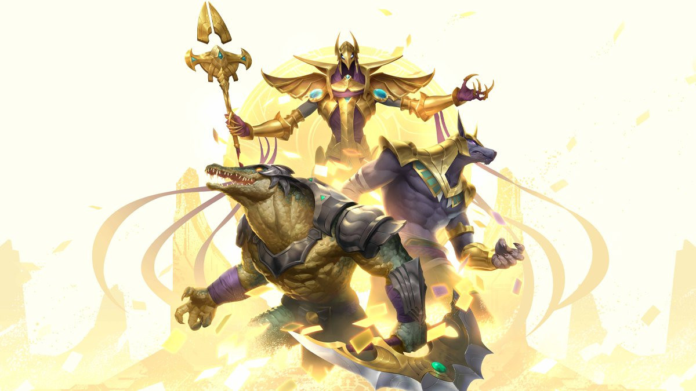
Ascendieron
los dos
Nasus
· chacal
Renekton
· cocodrilo
La Tumba de los Emperadores
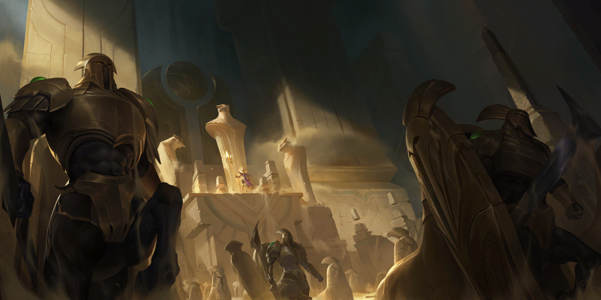
Y Nasus
selló la puerta
Con su hermano vivo adentro, encerrado con Xerath.
Siglos después
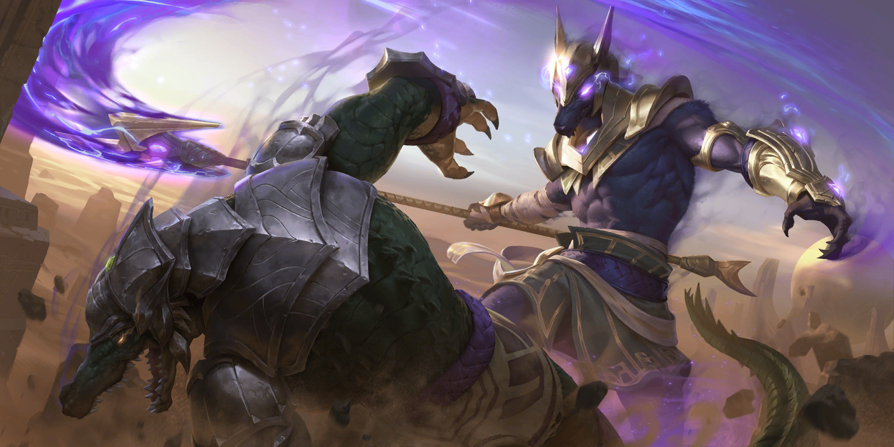
Ya no era
su hermano
El mismo que lo había cargado en brazos
creyendo que iba a morir por él.
Catorce skins
Once a la venta
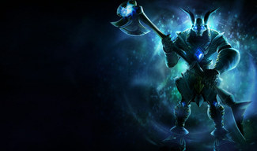
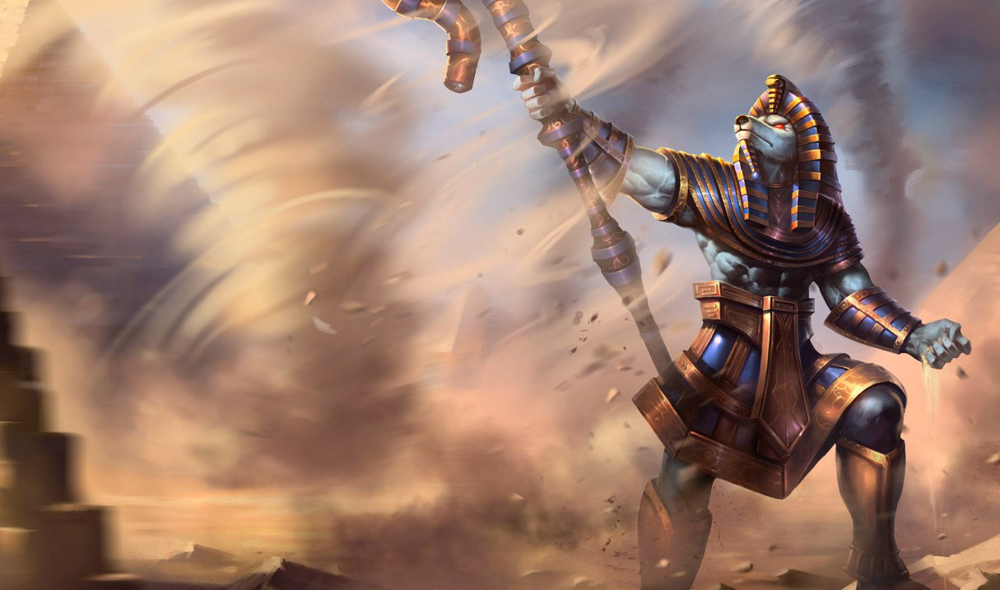
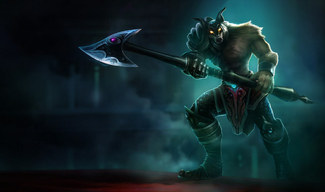
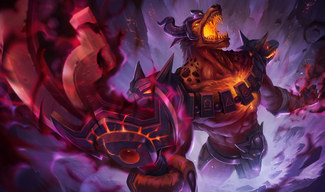
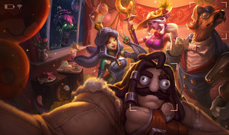
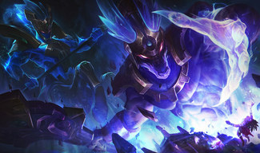
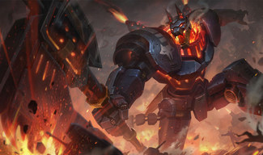
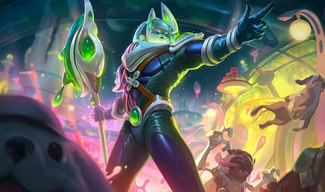
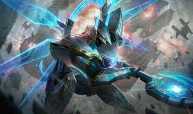
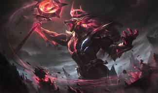
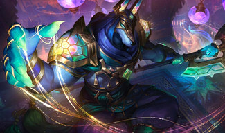
Y dos encerradas
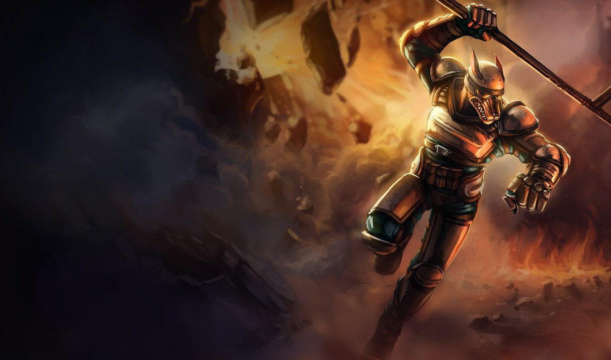
EN BÓVEDA
Riot Nasus K-9
2011
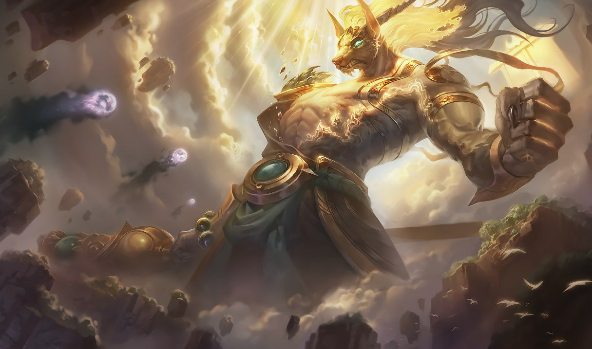
EN BÓVEDA
Guardián Lunar
2018
Esas ya no las vas a tener nunca
Diecisiete años del Curador de las Arenas
Feliz cumpleaños,
Nasus
GIGI EASY
Tírenme un follow o les voy a meter la cuarta. Chao.